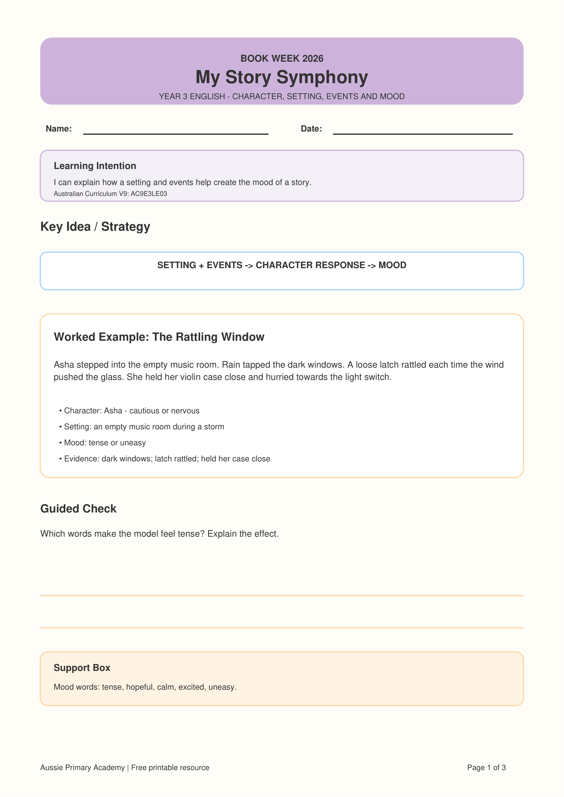

Year 3 · English · Literature · Book Week 2026 · Free Printable
Year 3 Story Mood Worksheet
Help Year 3 students connect setting and events with character responses and mood, then use evidence from a short literary text to explain their thinking.
Worksheet Preview

Preview of the first page · Full 3-page PDF includes student activities, answer key and teaching support
About This Year 3 Story Mood Worksheet
This Year 3 English resource helps students move beyond identifying story elements to explaining how those elements work together.
Students examine the setting, important events and a character's response, then use these clues to identify and explain the mood of the story.
It is part of the My Story Symphony – Book Week 2026 collection from Aussie Primary Academy.
Learning Intention
“I can explain how a setting and events help create the mood of a story.”
Australian Curriculum V9
AC9E3LE03
Supports students to discuss how language and illustrations portray characters and settings, and how settings and events influence mood.
Aussie Primary Academy is an independent publisher and is not endorsed by ACARA.
Skills Practised
- Identifying story mood
- Examining setting details
- Connecting events to character responses
- Finding mood clues
- Selecting text evidence
- Explaining changes in mood
Teacher / Parent Tip
Model this simple thinking chain:
Setting + Event → Character Response → Mood
Different mood words can be correct when students support their answer with relevant evidence from the text.
What's Included
- Year 3 learning intention
- Character, setting, events and mood focus
- Worked example
- Short literary reading task
- Mood vocabulary support
- Text evidence questions
- Character-response analysis
- Answer key
- Teacher and parent support
Differentiation
Support: Use the mood word bank and ask students to underline one clue from the setting or event before explaining their answer.
Core: Students identify the mood and support their response using relevant story evidence.
Extend: Ask students to rewrite one setting detail so that the same event creates a completely different mood.
Why This Helps Readers
Understanding mood develops inferential comprehension. Students learn that readers can use setting details, events and character reactions as evidence to explain the emotional feeling created by a story.
How to Use This Worksheet
- Whole class: Model how one setting detail can influence the mood.
- Guided reading: Highlight setting, event and character-response clues together.
- Independent practice: Students choose a mood word and justify it with evidence.
- Writing connection: Ask students to change a setting detail to create a different mood.
Frequently Asked Questions
What does “mood” mean in a story?
Mood is the feeling or atmosphere a text creates for the reader. Students use clues from the setting, events and character responses to identify it.
Can students choose different mood words?
Yes. More than one mood word may be reasonable when the student can support it with accurate evidence from the text.
Is an answer key included?
Yes. The resource includes suggested answers and teaching support.
Is this worksheet free?
Yes. The PDF is free to download and print for learning use.
Free Book Week Bonus
Continue with My Book Week Reading Adventure
Explore the free Foundation–Year 6 reading booklet with activities for story elements, characters, settings, vocabulary, creative response and book recommendations.
View the Free F–6 WorkbookExplore the Book Week Story Elements Collection
Choose another year level or continue through the collection.